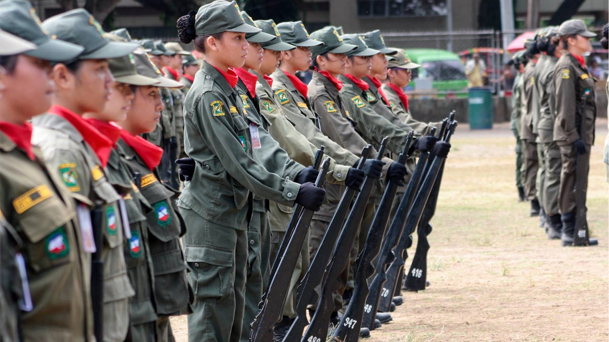

Republic Act 9163 enabled the establishment of National Service Training Program for Tertiary Level students with an aim to promote civic consciousness among the youth and inculcate in them the spirit of nationalism and advance their involvement in public
and civic affairs.
NSTP is a program designed to develop the youth’s physical, moral, spiritual, intellectual, and social well-being and promote defense preparedness and ethics of service while undergoing training in any of
its three program components. Its various components are specially designed to enhance the youth’s active contribution to the general welfare.
The NSTP has three components which are as follows:
i. Reserve Officers’ Training Corps (ROTC) A program institutionalized under Sections 38 and 39 of Republic Act No. 7077 designed to provide military training to tertiary level
students in order to motivate, train, organize and mobilize them for national defense preparedness.
ii. Literacy Training Service (LTS) A program designed to train students to become teachers of literacy and numeracy skills to
school children, out of school youth, and other segments of society in need of their service.
iii. Civic Welfare Training Service (CWTS) It is composed of programs or activities contributory to the general welfare and the betterment
of life for the members of the community or the enhancement of its facilities, especially those devoted to improving health, education, environment, entrepreneurship, safety, recreation and morals of the citizenry.
Students of any baccalaureate degree course or at least two-year technical vocational courses in public and private educational institutions shall be required to complete one of the NSTP components as requisite for graduation.
Exemptions
only apply to:
i. Students who have already taken NSTP from a prior degree completed;
ii. Transferees and shiftees who have completed NSTP prior to transferring or shifting; and
iii. Foreign students
or aliens
Each of the NSTP program components shall be undertaken for an academic period of two semesters (NSTP 1 and 2) or an equivalent one-semester integrated (NSTP 1-2) course. The allotted time for NSTP classes per semester is 54 – 90 hours. The whole NSTP program weighs six units and should be taken for two semesters, three units each semester.
Student enrolled in the first semester of NSTP shall undergo a Common Module phase which will focus on: citizenship training; drug education; disaster awareness, preparedness, and management; environmental protection; and other national security concerns. Upon completion of the Common Module, the student must select the specific program component that he/she will pursue.
No. NSTP 1 is a prerequisite for NSTP 2.
No, you have to take six (units) of the same component to complete NSTP. According to the Implementing Rules and Regulations of the National Service Training Program as mentioned in Rule III, Section 4, you are “required to complete one (1) NSTP component of [your] choice as a graduation requirement.”
No. As a University policy, NSTP 1 and 2 should be taken in the same college.
NSTP 2 classes are mainly concerned with community engagement with the help of partner communities and organizations. CWTS and LTS students are required to conduct civic welfare and literacy activities or projects as part of the required 40-64 hours of community engagement.
Numeric grading will be used for NSTP classes. The grading system is upon the discretion of the instructor who is handling the NSTP class. Grades for NSTP will not be included in the computation of the students’ weighted average.
Graduates of the CWTS and LTS components of the NSTP shall belong to the National Service Reserve Corps (NSRC) and could be tapped by the State for literacy and civic welfare activities, especially in times of calamities while graduates of the ROTC program shall form part of the Citizen Armed Force.
Students who did not comply with the rules need to consult with the NSTP TUPC office.